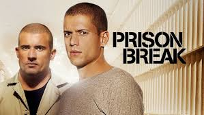

The Walking Dead
The Walking Dead is an American post-apocalyptic horror drama television series developed by Frank Darabont.
Prison Break
Prison Break is an American crime drama television series created by Paul Scheuring.

Rick & Morty
The series follows the misadventures of Rick Sanchez, a cynical mad scientist, and his good-hearted but fretful grandson Morty Smith, who split their time between domestic life and interdimensional adventures that take place across an infinite number of realities